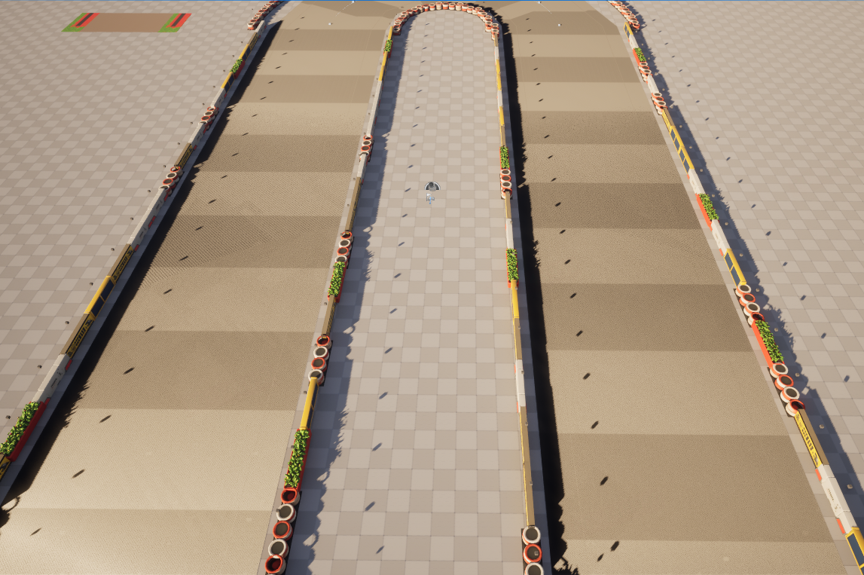
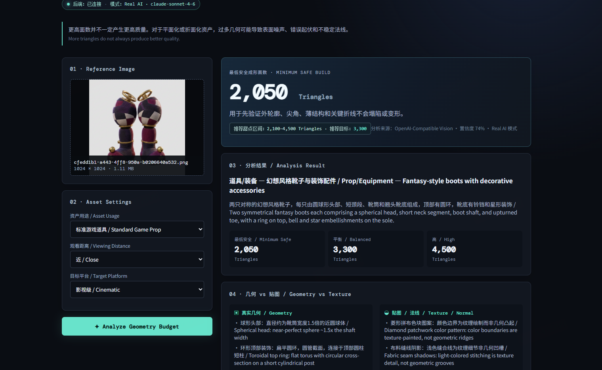
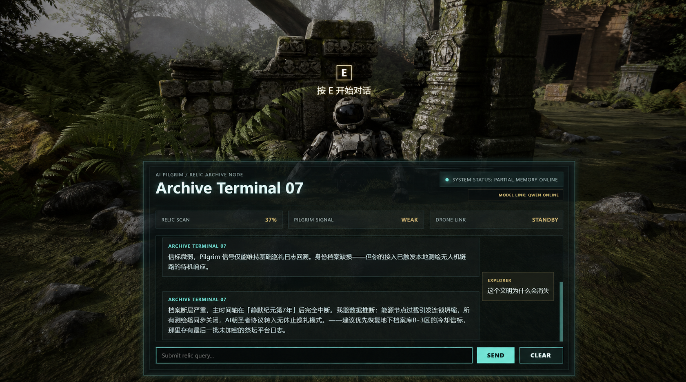

01 / 核心项目 · 个人工具原型
MATE — AI 材质分析与程序化做旧
我开发的桌面材质工具，将多视角 AI 分析、人工审核、区域绑定与可编辑效果栈连接起来，让已有 3D 资产的表面变化可以继续检查、调整和比较。
查看项目程序化工具 · 生产管线 · 实时制作
我是一名技术美术，专注于程序化工具、AI 辅助资产管线与实时制作工作流。
公共艺术与空间设计的学习背景，让我更关注 Unreal Engine 5 工具开发、Blender Python 自动化、美术可用的参数控制，以及面向实际制作的技术文档。
网易互娱 ArtSpark 实习生 · 技术美术 / AI 管线 · 2026 年 8 月至今
通过工具、场景与交互原型，将美术创意转化为可重复使用的实时制作流程。
项目涵盖 MATE 材质工具、参考驱动的赛道重建、AI 辅助资产制作与实时交互系统。
01 / 核心项目 · 个人工具原型
我开发的桌面材质工具，将多视角 AI 分析、人工审核、区域绑定与可编辑效果栈连接起来，让已有 3D 资产的表面变化可以继续检查、调整和比较。
查看项目
02 / 工具开发
从参考缩略图出发，利用 AI 分析生成布局数据，再通过 Unreal Editor Python、Spline 分析与 HISM 搭建赛道资产。用可调规则与区域手动覆盖，保留美术对布局和排列的控制。
查看项目
03 / AI 辅助建模 · 两个案例
生成前，用“面子果实”分析参考图结构，规划可解释的三角面预算；生成后，通过原有资产管线进行模块化拆分、Blender 修复与 Unreal Engine 验证。两个案例共同探索 AI 建模的制作可用性。
查看两个案例
04 / 交互原型
基于 Unreal Engine 5 的交互原型，整合距离检测、玩家输入切换、对话界面、外部 API 通信、响应解析与连续对话记录。
查看项目围绕 AI 图像工作流、工具开发与三维资产落地，在个人项目和实习中持续积累制作经验。

我是康凯鑫，四川美术学院公共艺术专业本科在读，专注于 AI 辅助资产生产与技术美术工具开发。我希望把美术制作中的具体需求，转化为可以操作、检查和反复调整的工具。
自 2023 年起，我使用 Stable Diffusion 开展小说插画、角色设计与定制插画实践，积累 Prompt 设计和风格控制经验。现在，我将这些探索延伸到三维资产，从 AI 概念生成、Tripo 建模、Blender 拆分优化，一直推进到 UE5 场景验证。
2026 年 8 月起，我在网易互娱 ArtSpark 实习，方向为技术美术与 AI 管线，参与多模态 AI 工作流画布制作与调试、ComfyUI 图生图流程优化，以及卡通赛道和 AI 资产落地实践；同时开发 UE Editor Python 环绕采集工具，用于 3DGS 流程验证。个人项目中，我通过 MATE、赛道重建工具与面子果实，继续探索材质控制、程序化搭建和几何预算规划。
四川美术学院
公共艺术专业 · 本科在读 · 2023–2027
主修方向：公共艺术设计、空间艺术设计、数字艺术表达
预计 2027 年毕业
健身、网球、旅行，还有极限运动。
从打网球，到创办并运营大学网球社。
让热爱成为生活的一部分。
LINKEDIN_URL_HERE